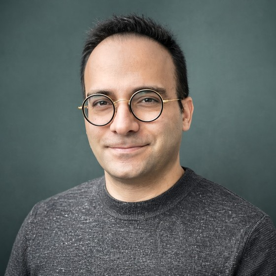

About me

I work where AI meets disability.
Alex Hashemi is a Toronto-based researcher, software developer and digital artist. He is completing an MA in Science and Technology Studies at York University and works as a research assistant in the Social and Technological Systems (SaTS) Lab. His Major Research Paper audits how automatic speech recognition (ASR) performs on atypical and disabled speech, and asks what it would take to hold these systems to a testable standard of accessibility. He previously earned an MA in Cinema from the University of Tehran, directed and produced film and theatre in Iran, and later retrained as a software developer in Canada. His wider interests include AI and disability, algorithmic auditing, and AI sovereignty.
He is a Sensorium Graduate Research Associate at York's Centre for Digital Arts and Technology, and a trainee member of the Centre for Artificial Intelligence & Society (CAIS) and the Centre for Vision Research (CVR). As a developer he built web platforms and mobile games for McDonald's global launches in 40+ languages, including an accessibility tool that validates audio description and closed captions. It cut manual verification time by up to a month a year, saving thousands of dollars annually.
Education
- MA, Science and Technology StudiesYork University
- MA, CinemaUniversity of Tehran
Certificates
- Accessibility Training Certificate SeriesDeque University (Deque Systems, Inc.). WCAG 2.2, ARIA widgets, AJAX & SPAs, responsive design, multimedia accessibility, visual design, form validation, semantic structure, device-independent input, and IAAP certification preparation
- Diploma, Full Stack Web DevelopmentLighthouse Labs, Toronto
Experience
- Research Assistant“When People Talk, Listen Completely” Project, Social and Technological Systems (SaTS) Lab, York University, TorontoJan 2026 to present
- Summit Technical, Audio and Visual Support (Volunteer)Canadian Disability Tech Summit 2026, TorontoNov 2026
- Conference Technical Support (Volunteer)Society for Social Studies of Science (4S) Annual Meeting, TorontoOct 2026
- Peer-to-Peer Mentor for Cancer Caregivers (Volunteer)Head & Neck Cancer Alliance, Charleston, SCSep 2024 to present
- Software DeveloperTMS, Chicago, IL. Mobile and web games for McDonald's global launches in 40+ languages; built the Bulk VTT Validator accessibility toolSep 2022 to Oct 2026
- Software DeveloperThe Refugee Centre, Montreal, QC. Full-stack web application (Python, React, PostgreSQL)Apr 2022 to Sep 2022
- Web DeveloperUnique Kitchen & Baths, Orange County, CASep 2021 to Mar 2022
- Web DeveloperBPF Solutions Group, Toronto, ONSep 2020 to Mar 2022
- Web DeveloperFuture Immigrants Group, Toronto, ONApr 2020 to Sep 2020
Technical Skills
| AI & Machine Learning | Scikit-learn, Supervised Learning, AI Integration |
|---|---|
| Data Science & Analytics | NumPy, Pandas, Statistical Analysis, Matplotlib, Seaborn |
| Databases | PostgreSQL, MySQL |
| Frontend Development | React.js, HTML5, CSS3, SASS/SCSS, jQuery, AJAX |
| Backend Development | Python, Node.js, Express.js |
| Testing & Version Control | Jest, Cypress, Mocha, Chai, Storybook, Git |
| Virtual Reality | Unity (VR, XR Development) |
| Design & Media Production | Adobe Creative Cloud, Web Design, DSLR, Figma |
| Project, Content & CRM Tools | WordPress, Jira, Confluence, Lokalise, Keap, HubSpot |
Memberships
- Sensorium Graduate Research AssociateCentre for Digital Arts and Technology, York University
- Trainee MemberCentre for Artificial Intelligence & Society (CAIS), York University
- Trainee MemberCentre for Vision Research (CVR), York University